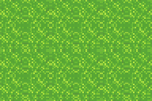
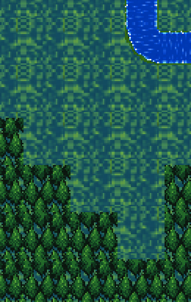
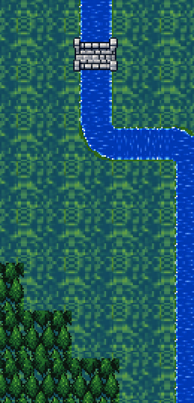
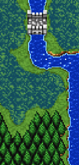
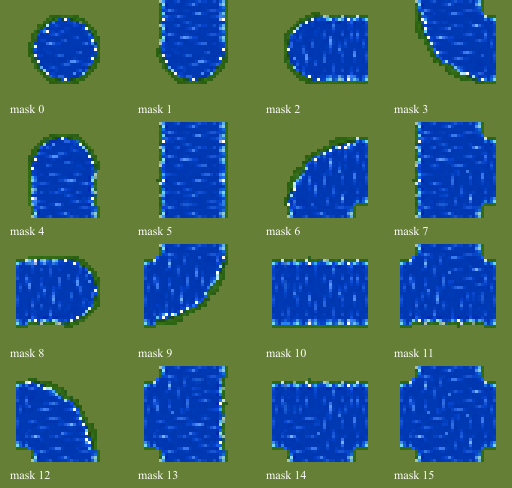

Bright64px field grass, four registered32px phases, woodland32 river-biome ground and16 separate river overlays. No color recoloring or screenshot pixels in production.
Mechanical checks and measured core widths · Manifest





Source-fragment assemblies improve width while preserving authored pixels. Decorative/reference fidelity remains visual review; no retail1:1, runtime, animation, collision or integration claim.